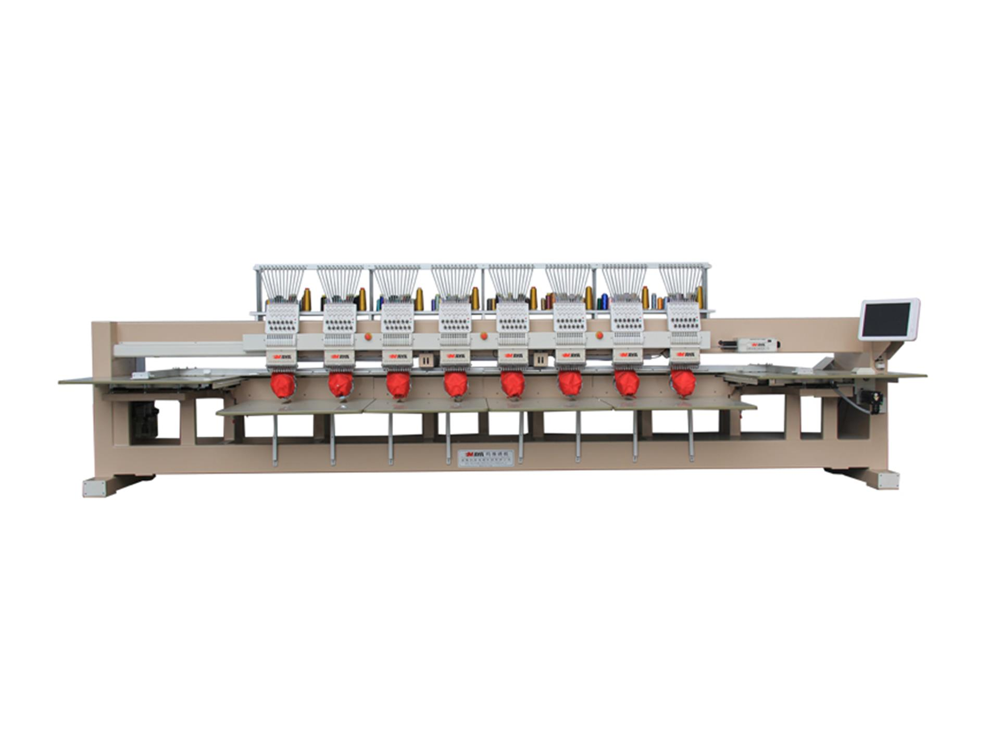
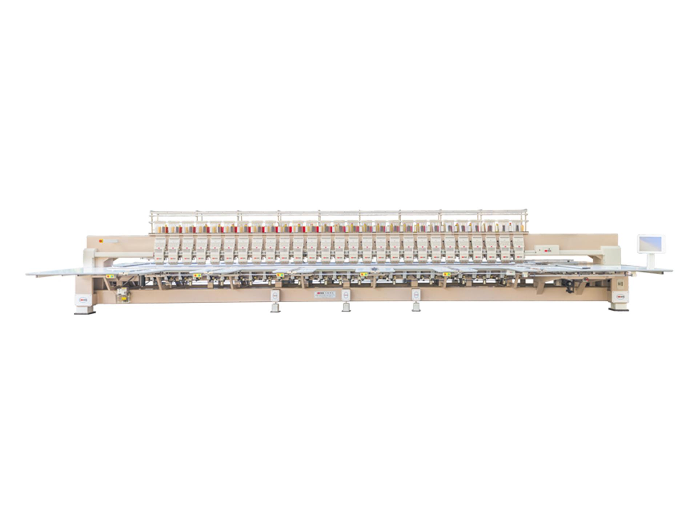

(...)Nakış Makineleri
(...)Nakış makineleri endüstri için kusursuz işçilik sağlar.
Anasayfa |
Hakkında |
Modeller |
Özellikler |
Galeri |
Teknik Destek |
İletişim
Hakkında
Nakış makineleri, kumaş üzerine desen ve yazı işlemek için kullanılan mekanik veya bilgisayar kontrollü cihazlardır.
Endüstriyel çok iğneli makineler yüksek hız ve seri üretim için tercih edilirken, ev tipi modeller hobi ve küçük atölyeler için uygundur.
Modern makineler dijital desen yükleme, çoklu renk geçişi ve hassas iğne kontrolü gibi özelliklerle karmaşık motifleri hızlıca işler.
Doğru iğne, iplik ve gerilim ayarı kaliteli sonuç için kritiktir; düzenli bakım ve temizlik makinenin ömrünü uzatır.
Nakış makineleri tekstil, reklam ürünleri, spor formaları ve kişiye özel hediye üretiminde geniş kullanım alanı sunar.
Modeller
Endüstriyel Çok İğneli

yüksek hızda çalışabilen çok iğneli bir endüstriyel nakış makinesidir. Seri üretim
için uygundur ve dayanıklı yapısı ile bilinir.
Ev Tipi

Ev kullanıcıları ve hobi sahipleri için tasarlanmıştır. Kolay kullanım ve taşınabilirlik
ön plandadır.
Şenil Zincir Nakış Makinası

MY MAX-450 Süper Çok Kafalı Şönil Nakış Makinası. Zincir için üst düzey performans sunar
Temel Özellikler
- İğne sayısı ve iğne aralığı
- Maksimum çalışma hızı (ppm)
- Kullanıcı dostu kontrol paneli
- Desteklenen dosya formatları (DST, PEC vb.)
- Başlangıç/stop hız rampası (hızın yumuşak artışı/azalışı)
- Dokunmatik veya düğmeli arayüz seçenekleri
- Ön izleme / simülasyon modu (desen çalıştırmadan önce)
- Çoklu dil desteği (arayüz dili)
- USB / SD kart / ağ üzerinden dosya aktarımı
- Çoklu renk geçişleri
- İplik gerginlik ayarı (manuel/otomatik)
- Dayanıklılık / endüstriyel kullanım için malzeme kalitesi
- Garanti ve servis ağı bilgileri (yedek parça erişimi)
Galeri



Bakım & İpuçları
- Düzenli yağlama: üretici talimatlarına uygun yağ kullanın.
- İplik ve iğne kontrolü: uyumsuz iğneler desen bozukluğuna neden olur.
- Gerginlik ayarları: kumaşa göre test yapın.
- Temizlik: toz ve iplik artıklarını düzenli temizleyin.
- İğne değişimi: Uzun kullanımdan sonra iğneler körelir; iğneyi periyodik olarak değiştirin.
- Bobin bakımı: Bobin yuvasını temiz tutun, iplik dolanmasına karşı kontrol edin.
- İplik kalitesi: Düşük kalite iplik makinayı zorlar, düzensiz dikişe neden olur.
- Kasnak düzgünlüğü: Kumaşı kasnağa düzgün ve gergin yerleştirin, kırışıklıklardan kaçının.
- Kumaş stabilizatörü: İnce veya kaygan kumaşlarda destekleyici (telâ) kullanın.
- İplik tansiyonu: Üst ve alt iplik tansiyonunu uyumlu şekilde ayarlayın.
- Fan ve havalandırma: Motor ve elektronik bileşenlerin aşırı ısınmaması için havalandırma deliklerini temiz tutun.
- Elektrik koruması: Voltaj dalgalanmalarına karşı priz koruyucu kullanın.
İletişim
Sorularınız için e-posta: mailmailmail.com
Ana Sayfaya Dön
© 2025 (...)Nakış Makineleri Rehberi - Tüm hakları saklıdır.